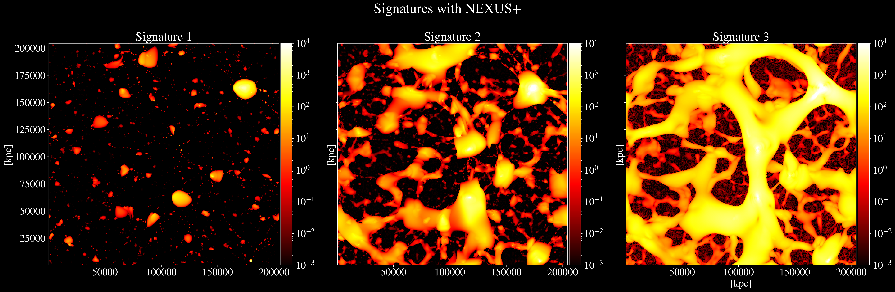

The Effects of Baryonic Matter Beyond the Galactic Halo in Cosmological Simulations
Over the past year I have been working under Prof. Jia Liu of University of Tokyo to analyze the effects of baryonic matter beyond the galactic halo in cosmological simulations such as IllustrisTNG. Results are pending, but in the mean time here is a super cool plot from the project as a teaser: